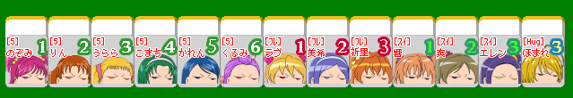
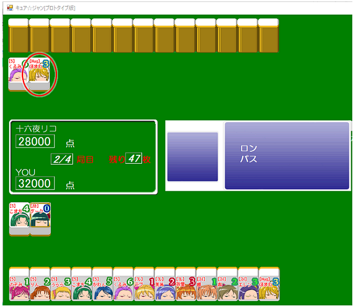
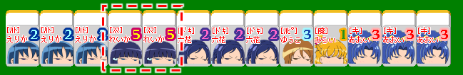
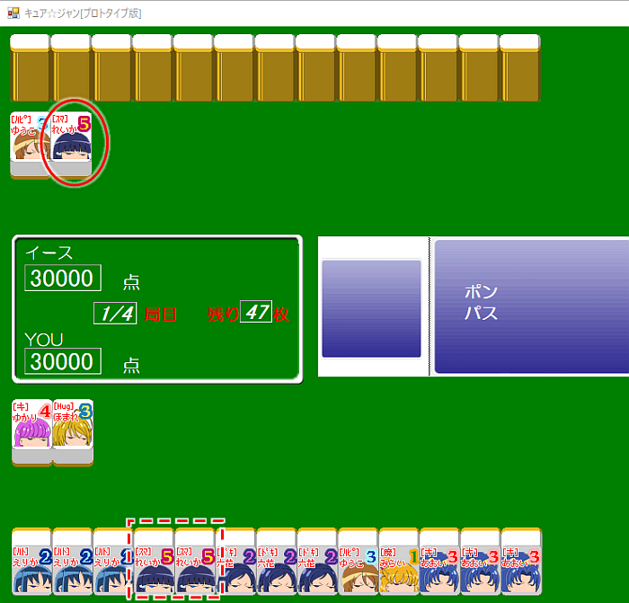
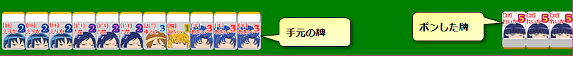
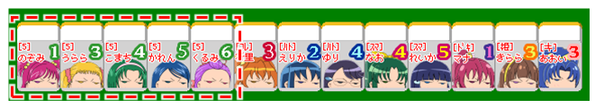
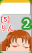
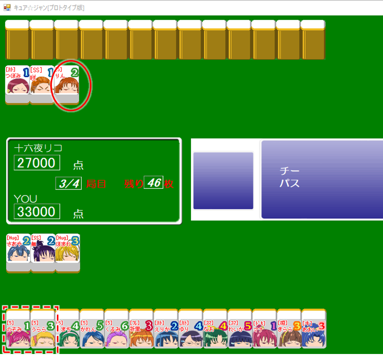
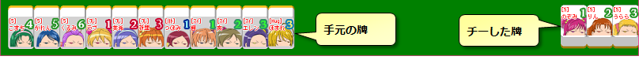

5.ロン・ポン・チー
ロンのやり方

例えば、今こんな形の手牌だったとするわね。

あとが来たら上がりだね！わくわくもんだぁ！

そして、相手が捨てた牌が自分の待っている牌だった場合…この時「ロン」を選択すると、相手が捨てた牌をもらって上がることができるの。
これがロンのやり方よ。
これがロンのやり方よ。
なるほど～！やったぁ！これでアガリ！
ちなみに「ロン」したくない場合は「パス」を選べばいいのよ！
ポンのやり方

次はこんな手牌よ。
おぉ～、これは「オール青キュア」が狙えそうだね～！青キュアを集めなきゃ！

そして、相手がを捨てたわ。みらい、あなたならどうする？
え～！その牌欲し～よ～！でもアガリにはならないからロンはできないし･･･どうすればいいの？
こういう時は「ポン」をすればいいのよ！。ポンをすると、相手の捨てた牌を使って刻子(3枚の同じ牌の組)をつくることができるの。
「相手が捨てた牌と同じ牌を二枚、手牌に持っている」という条件さえ満たしていれば、ポンをすることができるのよ。

ポンをした後は、刻子を作るために自分の手牌から二枚取り出して、相手の捨てた一枚と合わせて端によせて置いておくの。
この３枚の牌はもう捨てることもできないし、手元の牌と入れ替えることもできないから注意してね。
チーのやり方

次はチーの説明ね！今回の手牌はこんな感じ。
今度は「5gogo!全員集合！」が作れそうだね！よ来い～来い～！

さて、みらいが狙っている牌が捨てられました。この時は･･･
あ･･･！ひょっとしてこれもポンみたいに捨て牌をもらう事ができるってこと？
その通り！チーをすると、相手の捨てた牌を使って順子(3枚の連続した牌の組)をつくることができるの。
「相手が捨てた牌と合わせて順子を作ることができる牌を2枚、手牌に持っている」という条件さえ満たしていれば、チーをすることができるのよ。

チーをした後は、順子を作るために自分の手牌から二枚取り出して、相手の捨てた一枚と合わせて端によせて置いておくの。
この３枚の牌はもう捨てることもできないし、手元の牌と入れ替えることもできない･･･っていうのはポンのときと一緒よ。注意してね。
「ツモあがり」役について
「ポン」や「チー」って便利だね！わたし、どんどんポン・チーをして手を作っていこうっと！
まって！みらい！確かに便利だけど、それらにはデメリットもあるの。乱発するのは危険よ。
え？？どういうこと～？
デメリットはいくつかあるわ。
まず「ロン・ポン・チーのいずれもする事なく上がった場合は”ツモあがり”という役がつく」の。
「ロン・ポン・チー」で相手の捨て牌を使う事なく、自分でツモった(引いた)牌のみで上がったから「ツモあがり」と呼ぶのよ。
そっかー、「ロン」や「ポン」や「チー」をすると、つくかもしれなかった役が一つなくなっちゃうんだね。
他にも、「ポン」「チー」には「ポンまたはチーをした後は、リーチをすることができない」というデメリットもあるわ。
今、リーチって言いました！？リーチってなに！？教えてリコせんせい！
リ、リーチについては次回の講座で説明します！
[5/9]